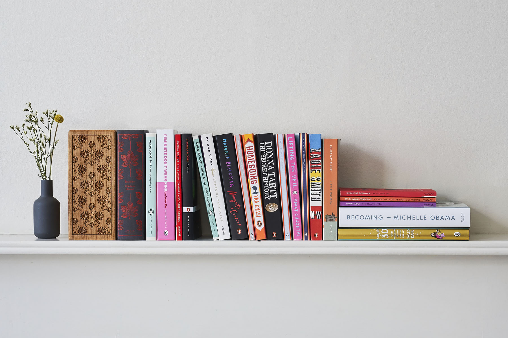

Who we are
Bestbook is a popular online site among the readers where people can find different book choices, buy
books and donate one. It launched in January 2020 and so far has more than a thousand signed users and
over 2 million sold books. Bestbooks is mostly famous because of its widespread book donation where
people from all over the world can exchange their favourite books and receive another one as a thank you
gift. That is why our motto is "Bestbook connects people".
Our main projects
Bestbook takes part in many projects and activities all over the world. One of our most popular is
"Book for every pupil"with book donations for every pupil staring from first grade to
eight grade.
Also, with every sold book online we donate 5% of its value to local charities sich as families' in need
charities and children's charities
Our next project, which Bestbook team plans to start in 2021 is to open a workshop where young and
talented writers can learn, work and express themselves.